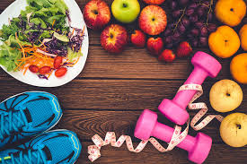

Nutrition and Fitness
By Kavya, August 17, 2024
Proper nutrition is a crucial component of any successful fitness plan. The food you eat provides the energy and nutrients your body needs to perform during workouts and recover afterward. Understanding how to balance your diet with your fitness goals is essential for achieving the results you desire.
The Importance of Macronutrients
Macronutrients—proteins, carbohydrates, and fats—are the building blocks of your diet. Each plays a specific role in supporting your fitness goals. Protein is vital for muscle repair and growth, carbohydrates provide energy for workouts, and healthy fats support overall body function.
Meal Timing and Frequency
When you eat can be just as important as what you eat. Eating small, balanced meals throughout the day can help maintain energy levels and support metabolism. Pre-workout nutrition should focus on providing energy, while post-workout meals should focus on recovery and replenishing nutrients.
Hydration and Fitness
Staying hydrated is essential for optimal performance during exercise. Water helps regulate body temperature, lubricates joints, and transports nutrients throughout the body. Make sure to drink water before, during, and after workouts to stay properly hydrated.
Supplements: Do You Need Them?
While a balanced diet should provide most of the nutrients your body needs, some people consider supplements to fill in nutritional gaps. Common supplements for fitness enthusiasts include protein powders, BCAAs, and multivitamins. However, it's important to consult with a healthcare professional before adding supplements to your routine.
Creating a Balanced Diet Plan
To achieve your fitness goals, create a diet plan that aligns with your specific needs and preferences. Focus on whole, nutrient-dense foods like lean proteins, whole grains, fruits, and vegetables. Avoid processed foods and empty calories that can hinder your progress.
Nutrition and fitness go hand in hand. By paying attention to what you eat and when you eat, you can fuel your workouts and optimize your performance, helping you reach your fitness goals more effectively.